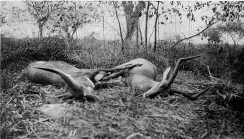

Memories Of Big Game Hunting. Part 5
Description
This section is from the book "Wild Life In Central Africa", by Denis D. Lyell. Also available from Amazon: Wild Life in Central Africa.
Memories Of Big Game Hunting. Part 5
The natives living near the Luangwa here were much troubled by hippos, which invaded their crops and did almost as much damage as the elephants, so on November 9, 1908, as I had failed to get a shot at some elephants I had spoored, I spent the rest of the day in shooting hippo. This is the account from my diary :—
Up before sunrise and got away just as the sun appeared in the East, and soon after leaving the village (Kanunta's)
I saw a herd of twenty roan antelopes, which were as tame as cows, perhaps because I did not wish to shoot any, being after elephants. We soon found elephant spoor, but the guide took me further on, saying he knew where the elephants were going and we could cut the spoor again.
Saw a fine ram puku with a herd (I got this ram a few days afterwards) and a small herd of four bull waterbuck, one with a good pair of horns. Then we got on the elephant spoor which led us into the troublesome matete reeds, which are as sharp as needles and very difficult to walk in, as the elephants trample it down and it trips one up at every step.
After going some way in this dangerous country we heard the elephants just ahead. Coming to a slight ridge covered with grass, instead of matete, I got on it, and got the glimpse of the backs of three elephants, one male and two females, which had evidently heard us and were walking fast. Soon they were lost to sight, and we followed as far as the Luangwa, where the tracks showed that they had crossed to the west bank. As we were debating what we should do, we saw a second herd of elephants run towards the river and cross also, one cow helping a small calf which got into difficulties. I got one of the men to carry me across, and in the process I got wet to the middle as the water reached almost to his shoulders. We then took the track again, and several times got to within 400 yards or so of the elephants, but the wind kept shifting every few minutes, as it always does in the Luangwa Valley during the months of September, October, and November. These shifty winds are, I imagine, caused by the heat, which forms vacuums in the air.
When crossing the river we had seen a big herd of hippo playing themselves in a deep pool, and the villagers begged me to shoot some. At that time six hippos were allowed on the licence, and up to this time I had not shot any that year, although I had killed a number in previous years. When coming back towards the river after the abortive chase after the elephants, I shot an impala ram. On getting to the pool where we could hear the hippos grunting and splashing, I sat down and killed five with consecutive shots. The sixth cost me three cartridges, for after my first shot at him he was only dazed, as he left the water and stood on a sandbank, where I gave him two more bullets which killed him. This may seem dreadful slaughter, but I have mentioned that the hippos do great damage to the crops, and, moreover, the inhabitants of the villages round here were suffering from a famine, as they had finished most of their last season's crop of grain. This supply of meat, of which not a pound was wasted, would give them food for some time, and put strength into those who were ill from hunger. Instead of regretting such slaughter, I would do the same again for the same purpose.
Bushbuck And Impala Rams
Further, the natives are not allowed to kill large game like elephants and hippos themselves, so it is a good action on any white man's part to kill it for them, as long as he does not exceed his allowance.
However, as I do not believe, now-a-days, in giving the natives great quantities of meat for nothing, and as they had plenty of goats and I wanted the milk as much as they wanted the hippo meat, I told them that I would give one hippo for one milch goat, and they were quite agreeable, and the different headmen went off to bring the goats. A large hippo wreighs quite 65001b., and a big goat certainly not more than 80lb., so they had certainly the best of the bargain.
Two of the headmen produced billy goats, saying they had no nannies, which I expect was a fib, so to square matters they had each to bring six fowls as well. This was only fair to the men who produced nannies, which are considered more valuable.
Another man who had no goats produced a pair of khaki trousers, which he said he had given fifteen shillings for in Salisbury, and on my refusing a hippo for them, as I told him I could not wear them, he almost exploded in tears, and begged me to take the pants and give him a hippo, for he and his people were very hungry. I relented, and he got his hippo, and I gave the trousers to my capitao (headboy).
Then the excitement began, as the men belonging to each hippo owner went in, and got the hippos out on a small sandbank, all in line. Unfortunately I had no films for my camera on this trip, so I lost some very interesting pictures. The natives had promised to keep the best of the hides, and all the teeth, for me, and they were soon busy hacking away at the meat, which they carried to the bank, where there was plenty of timber to make fires. Some of them busied themselves making stands to cook the meat on, and quite 1000 natives must have collected for the feast; and the owners of the hippos, who, except to their own families, do not believe in giving something for nothing, were busy bargaining for prime lumps of sea cow.
Another memory that comes back is a day's sport near the Rukusi stream in North-Eastern Rhodesia, where I had gone after elephants. On September 29, 1908, I had been out early looking for spoor fresh enough to follow, and I only found the tracks of a few cow elephants, which I did not want.
When travelling along the dried up bed of the Rukusi, we found the spoor of a big bull rhino which took us along the banks of the waterless bed for some distance. At last it lead us to the higher country, over undulating hills with ' many thorn trees here and there. At this time of year big game does not seem to care, if not harried much, to travel far, as the heat of the sun is tremendous and it makes the animals lazy. About 10 a.m. I sat down to make a cup of tea and eat a little food ; and as I always carry a big gourd of water, and often a lump of dried meat for my men, they also had some refreshment.
Continue to:
- prev: Memories Of Big Game Hunting. Part 4
- Table of Contents
- next: Memories Of Big Game Hunting. Part 6